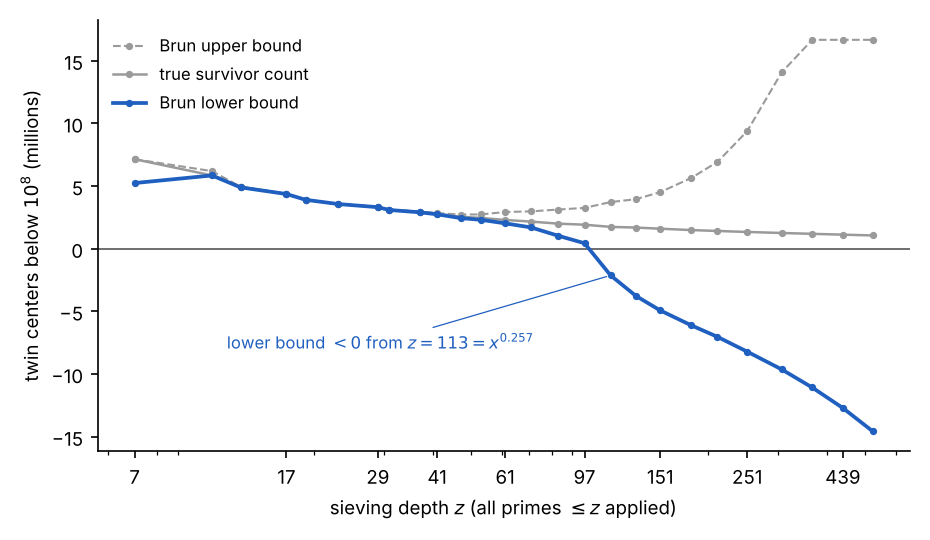
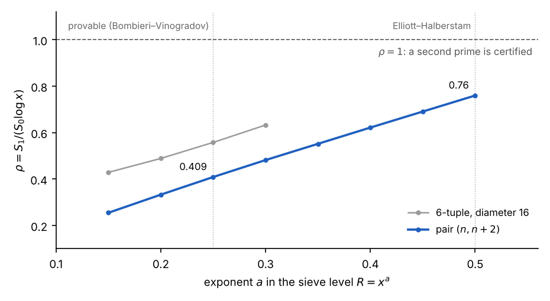
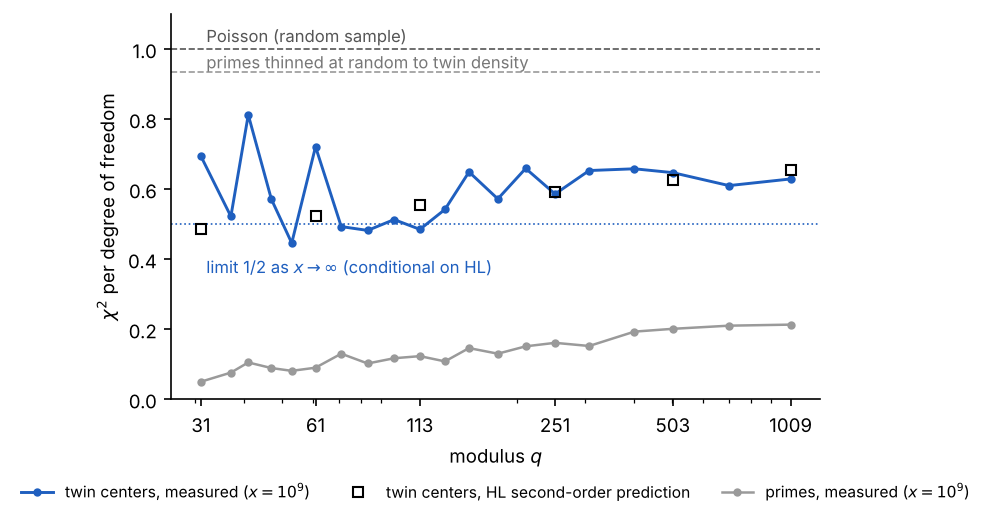

Lo que una criba casera puede — y no puede — decir sobre los primos gemelos
Anthony Phillips · 2 de noviembre de 2026
Todo primo mayor que 3 es de la forma 6x − 1 o 6x + 1. Esa es toda la observación de la que partí, y es exacta: el 2 elimina todos los pares, el 3 elimina uno de cada tres, y lo que queda en cada bloque de seis es el par {6x − 1, 6x + 1}. Todo primo nace como la mitad de un par de gemelos. La mayoría pierde a su gemelo después.
Quería ver cómo los primos siguientes hacen la matanza, así que construí una regla. Multipliqué los primos usados hasta el momento: 2·3 = 6, 2·3·5 = 30, 2·3·5·7 = 210. Llamemos P a ese producto. Dentro de un período de longitud P, marqué los números que ningún primo ≤ p divide. Esos son los únicos candidatos a primo por encima de p. Para P = 30 los sobrevivientes son {1, 7, 11, 13, 17, 19, 23, 29}; para P = 210 hay 48.
La recursión es la parte que no había visto escrita. Para obtener la rueda siguiente a partir de la anterior:
De 6 a 30: repetir {1, 5} cinco veces da diez candidatos; quitar 5·1 = 5 y 5·5 = 25; sobreviven ocho. De 30 a 210: repetir los ocho sobrevivientes siete veces, quitar 7·{1, 7, 11, 13, 17, 19, 23, 29} = {7, 49, 77, 91, 119, 133, 161, 203}; sobreviven 48. Cada primo nuevo quita exactamente una copia de la rueda anterior, escalada por sí mismo, de modo que el conteo es
\[ \varphi(p\#) = (p-1)\,\varphi\big((p^{-})\#\big) = \prod_{q \le p} (q-1) \]
Dos cosas se desprenden de esto. Los sobrevivientes son simétricos respecto a P/2 (si r sobrevive, P − r sobrevive), y por eso el patrón puede escribirse como 30x ± {1, 7, 11, 13}. Y la rueda de p solo certifica primos por debajo del cuadrado del primo siguiente: la regla 6x ± 1 es perfecta hasta 25, la rueda de 30 hasta 49, la de 210 hasta 121. Más allá de esa línea, los sobrevivientes son candidatos, no primos.
Nada de esto es nuevo, y eso es lo primero útil que se aprende. La regla es la factorización por rueda (wheel factorization), la recursión es el Teorema Chino del Resto (las unidades módulo 30 son pares de unidades módulo 6 y módulo 5: 2 × 4 = 8), y el conteo de sobrevivientes ∏(q − 1) es la función φ de Euler del primorial. La criba de Eratóstenes, Euler y Gauss llegaron primero.
La rueda también lleva dentro dos hechos más profundos. La fracción sobreviviente ∏(1 − 1/q) tiende a cero, pero despacio: Mertens demostró en 1874 que se comporta como e^(−γ)/ln p. Así que la rueda nunca se queda sin candidatos; su densidad simplemente se adelgaza como 1/ln p, que es la forma del Teorema de los Números Primos. Y si se cuentan los sobrevivientes que conservan a su gemelo (r y r + 2 sobreviven ambos), el conteo es ∏(q − 2) en lugar de ∏(q − 1), y el cociente entre la densidad de gemelos y el cuadrado de la densidad de primos converge:
\[ \prod_{q \ge 3} \frac{1 - 2/q}{(1-1/q)^2} = C_2 = 0.660162\ldots, \qquad 2C_2 = 1.32032\ldots \]
Esa es la constante de los primos gemelos de Hardy y Littlewood (1922). Calculada solo con la rueda, llega a 0.660162 para q = 10⁵. Su conjetura, que el número de pares gemelos por debajo de x es aproximadamente 2C₂·x/(ln x)², es lo que la rueda predice si los primos se comportan de manera independiente después de cribar. La pregunta es si lo hacen.
La conjetura de los primos gemelos, en el lenguaje de la rueda, es: para toda rueda, algún par {6x − 1, 6x + 1} sobrevive por debajo de la línea de certificación, y esto nunca se detiene. Es más limpio seguir los centros. Un par gemelo es (n − 1, n + 1) con 6 | n, y ambos sobreviven a la rueda de p exactamente cuando n ≢ ±1 (mod q) para todo primo q ≤ p. Cada primo impar prohíbe dos residuos para el centro; de ahí sale ∏(q − 2). Equivalentemente, n² − 1 no tiene factor primo por debajo de √n.
Dos atajos tentadores fallan, y vale la pena ver por qué. El truco de Euclides, n = p# de modo que n ± 1 son coprimos con todos los primos hasta p, sí produce gemelos en 6 ± 1, 30 ± 1 y 2310 ± 1 (5/7, 29/31, 2309/2311). Luego 30031 = 59 · 509 y la construcción no vuelve a funcionar al menos hasta 15 primos. El número crece como p# mientras la protección solo llega hasta p; todo primo entre p y √(p#) tiene voto. Euclides necesita que exista un factor nuevo, lo cual es gratis; los gemelos necesitan que todo factor esté ausente, que es la fuerza completa de la primalidad.
El segundo atajo es argumentar que la rueda mata una fracción creciente, así que al final mata todo. La fracción sí tiende al 100 %, pero Mertens fija la velocidad: los sobrevivientes por debajo de x son aproximadamente x·∏(1 − 2/q) ≈ c·x/(ln x)², que diverge. Densidad a cero, conteo a infinito, igual que los propios primos. Para que los gemelos se extinguieran, los primos tendrían que conspirar contra la regla del producto por un factor no acotado, y nada de lo observado hasta 10¹⁸ (808 billones de pares) lo sugiere.
El mayor par gemelo conocido, 2996863034895 · 2^1290000 ± 1 (388 342 dígitos, encontrado por PrimeGrid en 2016), muestra cómo es en realidad un sobreviviente. Su centro es divisible entre 2, 3 y 5 y después cae en un residuo cualquiera para cada uno de los demás primos: 2 mod 7, 4 mod 11, 2 mod 13, 3 mod 17. De los 45 primos impares por debajo de 200, esquiva ±1 por estructura en dos y por suerte en 43. El 2^1290000 está ahí para que el par pueda demostrarse primo con las pruebas de Proth y de Lucas–Lehmer–Riesel, no para ayudarlo a sobrevivir. Un poco de Euclides, y después ningún patrón.
La rueda de centros gemelos, programada en NumPy, coincide exactamente con los conteos de gemelos publicados en cada potencia de diez hasta 10⁸ (440 312 pares) y, con una criba segmentada, en 10⁹ (3 424 506) y 10¹⁰ (27 412 679). La predicción de Hardy–Littlewood está dentro del 0.01 % en 10⁸. El producto de Mertens converge a 1 con cinco decimales. Ese es el banco sobre el que corre todo lo demás.
Dentro de una ventana de 10⁷, la regla «cada primo mata 2/q de los centros restantes» es exacta al 0.01 % hasta q = 71, y después deriva: +1.1 % en q = 229, −2 % en 523, −9 % en 1187, −12 % en 1789. La regla del producto solo es exacta sobre un período completo, y 229# ya es astronómicamente mayor que 10⁷. Esa deriva es el término de error de la teoría de cribas, visto en vivo.
| profundidad de criba q | sobrevivientes bajo 10⁷ | regla del producto | cociente | gemelos certificados (bajo el siguiente q²) |
|---|---|---|---|---|
| 7 | 714 285 | 714 286 | 1.0000 | 8 |
| 31 | 310 456 | 310 458 | 1.0000 | 42 |
| 71 | 216 138 | 216 196 | 0.9997 | 123 |
| 229 | 139 132 | 137 560 | 1.0114 | 733 |
| 523 | 102 414 | 104 408 | 0.9809 | 2 918 |
| 1187 | 75 077 | 82 363 | 0.9115 | 11 058 |
| 1789 | 65 018 | 73 573 | 0.8837 | 22 360 |
| 3163 | 58 897 | 63 923 | 0.9214 | 58 897 |
La última columna es la conjetura en forma empírica: los sobrevivientes por debajo del cuadrado del siguiente primo son primos gemelos genuinos, y la columna aproximadamente se duplica en cada paso. Demostrar que nunca llega a cero es el problema entero.
Hay una paradoja conocida escondida en la columna del cociente. Si se criba hasta √x con la regla del producto, se predicen 2e^(−γ) ≈ 1.12 veces demasiados primos, y 4e^(−2γ) ≈ 1.26 veces demasiados gemelos; el cociente real/predicho para gemelos debería acercarse a 0.79. Medido: 0.995 en 10⁵, 0.944 en 10⁶, 0.922 en 10⁷, deslizándose hacia 0.79 como dice la teoría. Los primos están más correlacionados de lo que la independencia supone, y el doble para los pares.
La criba de Brun es la rueda hecha rigurosa: truncar la inclusión–exclusión a profundidad r, acotar el error de redondeo de cada término por 2^ω(d), y las sumas truncadas encierran el conteo verdadero. Hasta profundidad z ≈ 50 el encierro es apretado: en z = 47 las cotas son 2.44M y 2.72M alrededor de una verdad de 2.55M. Después el presupuesto de error, Σ 2^j·C(m, j) sobre m primos, rebasa al término principal.

Figura 1. phase1.py, x = 10^8, truncamiento de Bonferroni de la inclusión–exclusión con error ±2^ω(d) por término.
El término principal no es el problema: en z = 113 la regla del producto predice la verdad al 1 %. La criba simplemente no puede pagar el error que debe permitir. Los sobrevivientes a profundidad 113 tienen todos sus factores primos por encima de 113, así que cada uno de n − 1, n + 1 tiene a lo sumo 3 factores primos (el teorema de Brun de 1919 da un 9 fijo para todo x). Certificar primos requiere profundidad √x = 10 000, el doble de profundo en el exponente de lo que la criba alcanza a ver. Los pesos de Selberg empujan el punto de muerte hacia afuera, el refinamiento de Chen llega a «primo y a-lo-sumo-dos-factores», y el teorema de paridad de Selberg dice que este camino nunca alcanza el exponente 0.5.
El motor moderno sustituye «sobrevivió o no» por un peso. Goldston, Pintz y Yıldırım (2005) le dan a cada n un peso w(n) = Σ λ_d sobre d | (n − 1)(n + 1), d ≤ R, grande cuando n ± 1 no tienen factores pequeños, y comparan S1 = Σ[θ(n − 1) + θ(n + 1)]·w² con S0 = Σ w². Si ρ = S1/(S0 ln x) supera 1, algún n debe tener ambos vecinos primos. La trampa es R: las asintóticas son demostrables solo para R ≤ x^(θ/2), y el nivel de distribución demostrado es θ = 1/2.

Figura 2. phase2.py, x = 10^7, pesos λ_d = μ(d)(log(R/d)/log R)^k, se muestra el mejor de ℓ = 0, 1, 2.
Corrido sobre primos reales, ρ para el par es 0.41 en el nivel demostrable y 0.76 en el nivel de Elliott–Halberstam, que nadie puede demostrar. Extrapolando la tendencia casi lineal, ρ = 1 necesitaría a ≈ 0.66, es decir θ ≈ 1.3, y θ no puede exceder 1 por definición. Esto ya no es un problema de términos de error: aun concediendo todas las conjeturas, los pesos GPY sobre un par no pueden certificar dos primos.
Las tuplas más grandes lo hacen mejor (la 6-tupla llega a 0.56 en el nivel demostrable), pero con θ = 1/2 el cociente GPY tiende exactamente a 1 desde abajo conforme la tupla crece. El cambio de Maynard en 2013 fue pesar cada coordenada por separado; el cociente entonces crece como ln k y cruza 1 en k ≈ 105. La 105-tupla admisible más apretada tiene diámetro 600, después optimizado por Polymath a 246. Por eso los saltos acotados son un teorema y el salto 2 no: una demostración de los primos gemelos necesita un ingrediente que los pesos no contienen.
Si existe una demostración, necesita una entrada que la criba no puede generar: algo que distinga «primo» de «producto de dos primos grandes» (el problema de paridad de Selberg). La única vez que esa barrera se ha roto, los primos de la forma a² + b⁴ de Friedlander e Iwaniec (1998), la sucesión tenía una estructura oculta de dos variables que producía sumas bilineales. Así que la pregunta para los datos es si los centros gemelos muestran alguna estructura estadística más allá de lo que la rueda más Hardy–Littlewood predicen. Siete sondas, todas sobre gemelos reales hasta 10⁸, una hasta 10¹⁰.
Seis regresaron exactamente como la rueda predice.
La séptima fue distinta.

Figura 3. calib.py, thin.py y hl2.c, x = 10^9; la referencia de adelgazamiento es el promedio de tres semillas aleatorias; los cuadrados son la predicción de Hardy–Littlewood de segundo orden.
Los centros gemelos llenan las clases de residuos permitidas módulo q más uniformemente de lo que lo haría una muestra aleatoria: χ² por grado de libertad alrededor de 0.6 en lugar de 1, con todos los valores p en 0.99–1.00, lo cual es tan anormal como 0.01. Los propios primos son mucho más rígidos (0.05–0.25, creciendo con q y decreciendo con x, la forma de Montgomery–Soundararajan), y eso es esperado. Pero adelgazar los primos al azar hasta la densidad de gemelos da 0.93, así que «p + 2 es primo» no actúa como una selección independiente. El efecto se mantuvo plano de 10⁸ a 10¹⁰ y de q = 31 a 1009, sobrevivió la verificación de sesgo de tamaño, el control de adelgazamiento aleatorio y la verificación de convención de centro (usar p − 1 en lugar de p + 1 da números idénticos).
El orden extra es Hardy–Littlewood a segundo orden. Los pares gemelos están correlacionados entre sí: el número de n tales que n ± 1 y n + h ± 1 son todos primos está gobernado por la serie singular S₄(h) de la 4-tupla {−1, 1, h − 1, h + 1}. Escribamos ρ(h) = S₄(h)/(2C₂)² para la correlación de centros gemelos a distancia h. Es cero a menos que 6 | h, y entonces
\[ \rho(h) = 6 \prod_{p \ge 5} f_p(h), \qquad f_p(h) = \begin{cases} 1/(1-2/p) & p \mid h \\ (1-3/p)/(1-2/p)^2 & h \equiv \pm 2 \pmod p \\ (1-4/p)/(1-2/p)^2 & \text{en otro caso} \end{cases} \]
y su promedio sobre h es exactamente 1 (calculado: 0.99999 sobre h ≤ 10⁷). El valor esperado del estadístico χ² se obtiene sumando estas correlaciones sobre h ≡ 0 (mod q) y restando el promedio sobre todo h, el mismo mecanismo que da la rigidez de Montgomery–Soundararajan de los primos:
\[ E\Big[\sum_c (T_c - T/K)^2\Big] = T\Big(1-\tfrac{1}{K}\Big) + \Big(\tfrac{T}{x}\Big)^2 \cdot 2\sum_{0<h<x} \rho(h)\,(x-h)\,\Big[\mathbf{1}_{q \mid h} - \tfrac{1}{K}\Big], \qquad K = q-2 \]
Evaluada con ρ(h) calculada exactamente para todo h ≤ x, la predicción cae sobre la medición en todo módulo y toda escala, y toda predicción decrece con x:
| q | 10⁷ predicho / medido | 10⁸ predicho / medido | 10⁹ predicho / medido |
|---|---|---|---|
| 31 | 0.481 / 0.479 | 0.485 / 0.460 | 0.486 / 0.694 |
| 61 | 0.528 / 0.614 | 0.526 / 0.470 | 0.523 / 0.721 |
| 113 | 0.569 / 0.490 | 0.561 / 0.578 | 0.554 / 0.485 |
| 251 | 0.619 / 0.563 | 0.605 / 0.596 | 0.593 / 0.586 |
| 503 | 0.660 / 0.618 | 0.640 / 0.651 | 0.625 / 0.647 |
| 1009 | 0.699 / 0.709 | 0.674 / 0.669 | 0.655 / 0.629 |
La dispersión es del tamaño que permite el ruido de muestreo del χ² (±0.27 con 28 grados de libertad para q = 31, ±0.13 para q = 113, ±0.04 para q = 1009); los dos valores atípicos de 10⁹ son las dos filas de menos grados de libertad y quedan dentro de una desviación estándar. Las predicciones caen con x hacia el límite 1/2 deducido en la nota complementaria, a la velocidad que implica su corrección 2 log q / log x. Los primos gemelos son un 40 % más ordenados a través de las clases de residuos de lo que los haría una selección independiente, y el orden extra es precisamente el que imponen las correlaciones entre pares gemelos. No es una regla nueva; es la conjetura conocida, verificada al nivel de las fluctuaciones y no de los conteos, un nivel en el que no la había visto comprobada numéricamente. Una estimación de este déficit hecha de madrugada, antes de calcularlo, dio 10 %; el coeficiente logarítmico real para 4-tuplas es unas cinco veces mayor. La lección es calcular las predicciones, no adivinarlas.
¿Está esto en la literatura? Una búsqueda el 2 de noviembre de 2026 encontró los ingredientes pero no el enunciado. Para los propios primos, la varianza a través de clases de residuos es clásica: la conjetura de Hooley de que es asintóticamente x log q, el teorema de Montgomery–Hooley en promedio sobre módulos, el análisis de Fiorilli de su rango, y la demostración en cuerpos de funciones de Keating y Rudnick. Para primos gemelos en progresiones aritméticas, lo publicado son cotas de tipo Barban–Davenport–Halberstam promediadas sobre muchos módulos (Lavrik; Maier–Pomerance; Mikawa, quien también conjeturó un análogo de Bombieri–Vinogradov; Balog para tuplas generales; resumido en Palimar), no una asintótica a módulo fijo. Parry (Mathematika, 2021) escribe que no hay registrada ninguna fórmula asintótica para la varianza de gemelos en progresiones y que el caso primo está fuera de alcance como teorema. La maquinaria para la asintótica condicional está en Kuperberg (Int. J. Number Theory, 2025), quien demuestra asintóticas para sumas de series singulares restringidas a clases de residuos módulo r y las aplica al sesgo de Lemke Oliver–Soundararajan; el corolario de la varianza de primos gemelos y su verificación numérica no se enuncian ahí. Así que la predicción anterior parece ser un corolario no registrado de trabajo conocido, y la comparación con los datos hasta 10¹⁰ parece ser nueva. Es una afirmación modesta, y unas horas de búsqueda no son la búsqueda de un árbitro; el paso correcto es preguntar en MathOverflow y escribir la deducción con todo rigor a partir del Teorema 1.2 de Kuperberg, con sus términos de error.
La deducción de la asintótica condicional, con el resultado de que el cociente tiende a 1/2 para todo q fijo, está en la nota complementaria The variance of twin primes across residue classes: a conditional asymptotic and numerical evidence (paper.pdf).
No se encontró nada nuevo sobre los primos gemelos, y ese era el resultado honesto que había que esperar. Todo resultado positivo aquí tiene nombre y fecha: factorización por rueda, φ de Euler, Mertens (1874), Hardy–Littlewood (1922), Brun (1919), la obstrucción de paridad de Selberg (1949), Chen (1973), GPY (2005), Zhang y Maynard (2013). Lo que el ejercicio añade es una vista del muro desde adentro, con los números puestos.
El muro tiene tres capas, y cada experimento es una de ellas.
Así que una demostración necesita un cuarto ingrediente: información que distinga un primo de un producto de dos primos grandes. Los datos de Tipo I (cuántos números sobreviven a la criba por d) demostrablemente no pueden darla. El único precedente de haberla superado, Friedlander e Iwaniec, vino de una estructura bilineal escondida en la sucesión. Los experimentos buscaron la sombra estadística de tal estructura en los centros gemelos, en residuos, divisores, sumas de Möbius y funciones multiplicativas, y no encontraron ninguna. Si existe una estructura bilineal en {n : n ± 1 primos}, no es visible en los dos primeros momentos de los datos hasta 10¹⁰. Eso es consistente con la teoría: si apareciera en estadísticas de residuos sería información de Tipo I, y el Tipo I no puede terminar el trabajo.
Dos hechos vale la pena guardar. La constante de los primos gemelos puede producirse solo con la rueda, multiplicando (1 − 2/q)/(1 − 1/q)² hasta q = 10⁵. Y las fluctuaciones de los primos gemelos a través de clases de residuos obedecen la predicción de segundo orden de Hardy–Littlewood dentro del ruido de muestreo, una comprobación que no había visto reportada en esta forma. Ninguno de los dos es un paso hacia una demostración. Ambos son el tipo de cosa que solo se aprende construyendo el instrumento y dejando que te lleve la contraria.
La pregunta abierta que queda es la de siempre, enunciada ahora en los términos de la propia regla: para toda rueda, ¿sobrevive algún centro por debajo del cuadrado del siguiente primo, para siempre? Los datos dicen que sí en toda escala que alcanzamos. La aritmética dice que la regla, por sí sola, nunca podrá decir por qué.
Todo corre en Python con NumPy (SciPy para los valores p del χ², SymPy una vez para factorizar el gemelo récord). Todos los tiempos son en un contenedor en la nube de 2 núcleos con 7 GB de RAM.
| script | qué hace | parámetros | tiempo |
|---|---|---|---|
| phase0.py | criba de primos, conteos de gemelos contra la tabla publicada, Mertens, constante de gemelos desde la rueda, rueda de centros gemelos por profundidad, la paradoja 1.26 | x = 10⁸ | 45 s |
| phase1.py | cotas de Brun (truncamiento de Bonferroni, error 2^ω(d) por término) contra profundidad de criba, conteos reales de sobrevivientes | x = 10⁸ | 4 min |
| phase2.py | criba ponderada GPY sobre primos reales, ρ contra nivel de criba para el par y una 6-tupla | x = 10⁷ | 35 s |
| phase4a.py | equidistribución de residuos, independencia conjunta, divisibilidad de centros, valuación 2-ádica, cocientes de pares a distancia h, suma de Möbius de dos puntos | x = 10⁸ | 25 s |
| phase4b_ii.py, phase4b_ii_fix.py | sonda de funciones multiplicativas con sobrevivientes a profundidad z como control, prueba de ventana, residuo de Tipo II ponderado por λ | x = 10⁸ | 8 min, 10 s |
| phase4b_i.py | criba segmentada, χ²/gl de residuos de centros gemelos en 2·10⁸, 10⁹, 10¹⁰ | X = 10¹⁰ | 2 min |
| calib.py, thin.py | primos contra gemelos χ²/gl; control de adelgazamiento aleatorio | x = 10⁹ | 15 s cada uno |
| hl2.py, hl2.c | ρ(h) exacta para todo h ≤ x, predicción HL de segundo orden contra medición; usar la versión en C (gcc -O2 hl2.c -lm) | x = 10⁷ | 8 min (py); 0.2 s, 2 s, 34 s para 10⁷, 10⁸, 10⁹ (C) |
verify_derivation.py y smooth_check.py (x = 10⁶, 5 s) comprueban las constantes y las asintóticas de sumas parciales de la nota. Conteos de gemelos publicados usados para validación: 205, 1 224, 8 169, 58 980, 440 312, 3 424 506 y 27 412 679 pares por debajo de 10⁴ hasta 10¹⁰. Los pares gemelos con un miembro por debajo de 1 000 se excluyen de las estadísticas de residuos porque la rueda mata a sus propios generadores (el centro de (5, 7) es 6 ≡ 1 mod 5).
Fuentes: Twin Prime Search y el récord de 2016; la entrada de PrimePages para el par récord está enlazada desde ahí. La teoría citada (Mertens, Hardy–Littlewood, Brun, Selberg, Chen, Goldston–Pintz–Yıldırım, Zhang, Maynard, Polymath 8, Friedlander–Iwaniec, Montgomery–Soundararajan) es estándar y no se volvió a consultar para este texto; las cifras tomadas de ella deben verificarse contra los artículos originales antes de citarlas.